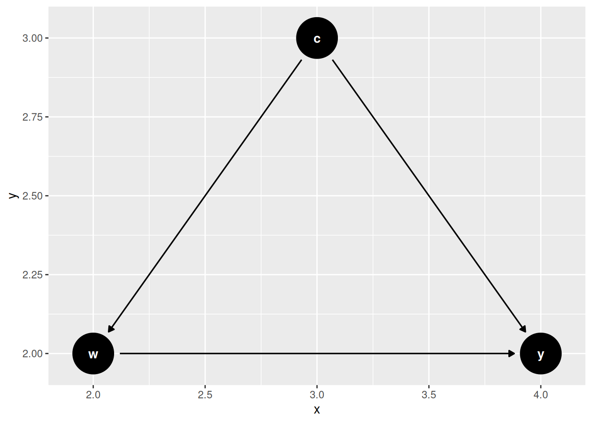
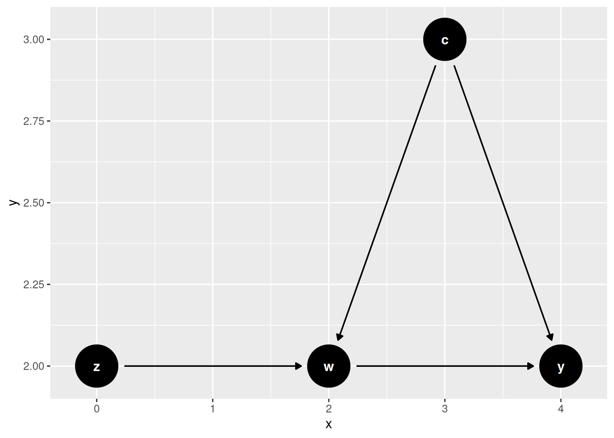
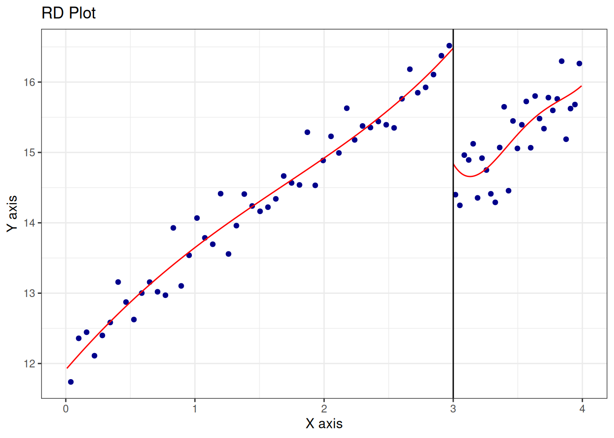

6 IV & Regression Discontinuity
If we have an unobserved confounder, unconfoundedness fails. Even when we have random experiment, we could have noncompliance. In that case, subjects are randomly assigned to treatment or control, but some of them do not comply with the assignment. In other words, there is selection bias in the sense that the treated group is self-selected. This selection could be correlated with the outcome.
6.1 Instrumental Variables
6.1.1 Uncontrolled Confounder
6.1.2 Why Does IV Work?

6.1.3 IV Under Potential Outcomes
- W has two potential outcomes W(1) and W(0), as a function of Z.
- Y has two potential outcomes Y(1) and Y(0), as a function of W.
Intention to Treat (ITT) is the average treatment effect of the treatment assignment Z. It is the difference between the average potential outcome under treatment and the average potential outcome under control. It is the average treatment effect of the treatment assignment Z, regardless of whether the subject complies with the assignment.
There are four possible groups of subjects in the case of binary treatment and binary instrument. For example treatment assignment Z and treated status W could be:
- Z=0, W=0: never-taker
- Z=0, W=1: complier
- Z=1, W=0: defier
- Z=1, W=1: always-taker
| W(1)=0 | W(1)=1 | |
|---|---|---|
| W(0)=0 | N | C |
| W(0)=1 | D | A |
These four groups (stratum) have different causal mechanisms. For example, the compliers are the only group that is affected by the treatment assignment Z in the same direction. The defiers are the only group that is affected by the treatment assignment Z in the opposite direction. The always-takers and never-takers are not affected by the treatment assignment Z.
Unfortunately we cannot identify the compliance group by looking at the data.
| Z | W | G |
|---|---|---|
| 0 | 0 | C, N |
| 0 | 1 | A, D |
| 1 | 0 | N, D |
| 1 | 1 | C, A |
6.1.4 Assumptions
- Exclusion restriction: \(Y(w, 1) = Y(w,0)\)
- Exogeneity of instrument: \(Z \perp [W(0),W(1), Y(0), Y(1)]\)
- Monotonicity (no defiers): \(W(0) \leq W(1)\)
6.1.5 LATE Identification
Since we excluded defiers, and the other two groups (always-takers and never-takers) are not affected by the treatment assignment Z. The only effect we can identify is the treatment effect on the compliers. This is called the Local Average Treatment Effect (LATE).
\[ \small \begin{aligned} & E[Y(Z=1) - Y(Z=0) | G = C] \\ &= \frac{E[Y(Z=1) - Y(Z=0)]}{P(W(1)=1, W(0)=0)} \\ &= \frac{E[Y|Z=1] - E[Y|Z=0]}{1-P(W=0|Z=1)-P(W=1|Z=0)} \text{ (rule out groups A and N) } \\ &= \frac{E[Y|Z=1] - E[Y|Z=0]}{P(W=1|Z=1)-P(W=1|Z=0)} \\ &= \frac{E[Y|Z=1] - E[Y|Z=0]}{E[W|Z=1)-E[W|Z=0]} \end{aligned} \]
6.1.6 Parametric Models
If we assume linearity, then this becomes the ratio of two OLS coefficients, sometimes called the Wald estimator.
\[ \begin{aligned} \tau_{ATE} &= \frac{E[Y|Z=1] - E[Y|Z=0]}{E[W|Z=1)-E[W|Z=0]} \\ &= \frac{Cov(Y,Z)}{Cov(W,Z)} \end{aligned} \]
Why do covariates help? Because we hope even if we don’t have exogeneity or exclusion assumption held, we would have those assumptions held within each level of \(X\).
6.1.7 Example
## DGP: data$y <- data$x + data$z + data$u
library(sem)
set.seed(66)
nobs=10000
nDim = 3
sdww = 1
sdzz=1
sdmm=1
## here we have three variables x,z,w.
## m is the omitted variable,x and m are correlated, z is the instrument, which is correlated with x, but not m. u is indepent of everything else.
crwm=.6
crmz=0
crwz=.8
covarMat = matrix( c(sdww^2, crwm^2, crwz^2, crwm^2, sdmm^2, crmz^2, crwz^2, crmz^2, sdzz^2 ) , nrow=nDim , ncol=nDim )
data = data.frame(MASS::mvrnorm(n=nobs, mu=rep(0,nDim), Sigma=covarMat ))
names(data) <- c('w','m','z')
data$u <- rnorm(nobs,0,1)
# dgp
data$y <- data$w + data$m + data$u
lm <- lm(y~w, data=data)
lm.full <- lm(y~ w + m, data=data)
tsls.model <- sem::tsls(y ~ w , ~ z , data=data)# lm is biased
summary(lm)$coefficients Estimate Std. Error t value Pr(>|t|)
(Intercept) -0.003580657 0.01372253 -0.2609326 0.7941498
w 1.358930425 0.01396918 97.2805995 0.0000000# lm.full is good
summary(lm.full)$coefficients Estimate Std. Error t value Pr(>|t|)
(Intercept) 0.001833551 0.009973474 0.1838428 0.8541405
w 0.992438925 0.010868032 91.3172630 0.0000000
m 1.013403057 0.010723435 94.5035837 0.0000000# tsls is good.
summary(tsls.model)$coefficients Estimate Std. Error t value Pr(>|t|)
(Intercept) 0.006008287 0.01424525 0.4217749 0.6731984
w 0.972416527 0.02312558 42.0493890 0.00000006.2 Regression Discontinuity Design
RDD (regression discontinuity design) is a quasi-experimental design that is used to estimate causal effects of interventions when assignment to the intervention is determined by whether a subject’s value on an observed covariate exceeds a threshold. The idea is that the assignment is as good as random, so we can estimate the causal effect of the intervention by comparing the outcomes of subjects who are just above and just below the threshold.
6.2.2 Identification of SRDD
\[ \tau_{RD} = \lim_{x \to c^+} E[Y|X=x] - \lim_{x \to c^-} E[Y|X=x] \]
In words, the treatment effect is the difference in the outcome from the right side and from the left side. This is the same as the difference in the outcome at the threshold, as if the treatment is assigned randomly.
6.2.3 Estimation of SRDD

Sharp RD estimates using local polynomial regression.
Number of Obs. 1000
BW type mserd
Kernel Triangular
VCE method NN
Number of Obs. 745 255
Eff. Number of Obs. 71 71
Order est. (p) 1 1
Order bias (q) 2 2
BW est. (h) 0.322 0.322
BW bias (b) 0.525 0.525
rho (h/b) 0.613 0.613
Unique Obs. 745 255
=====================================================================
Point Robust Inference
Estimate z P>|z| [ 95% C.I. ]
---------------------------------------------------------------------
RD Effect -1.859 -4.562 0.000 [-2.607 , -1.040]
=====================================================================6.2.4 Nonparametric Estimation
Sharp RD estimates using local polynomial regression.
Number of Obs. 1297
BW type mserd
Kernel Triangular
VCE method NN
Number of Obs. 595 702
Eff. Number of Obs. 360 323
Order est. (p) 1 1
Order bias (q) 2 2
BW est. (h) 17.754 17.754
BW bias (b) 28.028 28.028
rho (h/b) 0.633 0.633
Unique Obs. 595 665
=======================================================================================
Method Coef. Std. Err. z P>|z| [ 95% C.I. ]
=======================================================================================
Conventional 7.414 1.459 5.083 0.000 [4.555 , 10.273]
Bias-Corrected 7.507 1.459 5.146 0.000 [4.647 , 10.366]
Robust 7.507 1.741 4.311 0.000 [4.094 , 10.919]
=======================================================================================6.2.5 Fuzzy RDD
In fuzzy RDD, the treatment is assigned according to a threshold \(c\), but there exist non-compliance. This is similar to IV case.
\[ \tau_{FRD} = \frac{\lim_{x \to c^+} E[Y|X=x] - \lim_{x \to c^-} E[Y|X=x]}{\lim_{x \to c^+} E[W|X=x] - \lim_{x \to c^-} E[W|X=x]} \]
For example, if food stamp eligibility is given to all households below a certain income, but not all households receive the food stamps. In other words, income does not solely determine the assignment. Cutoff point increases the probability of treatment but doesn’t completely determine treatment.
FRDD is IV.
6.2.6 FRDD Example
Fetter (2013)’s main question of interest is how much of the increase in the home ownership rate in the midcentury US was due to mortgage subsidies given out by the government.
We’re using the running variable quarter of birth (qob), which has been centered on the quarter of birth you’d need to be to be eligible for a mortgage subsidy for fighting in the Korean War (qob_minus_kw). This determines whether you were a veteran of either the Korean War or World War II (vet_wwko).
vet <- causaldata::mortgages
# Create an "above-cutoff" variable as the instrument
vet <- vet %>% mutate(above = qob_minus_kw > 0)
# Impose a bandwidth of 12 quarters on either side
vet <- vet %>% filter(abs(qob_minus_kw) < 12)
m <- feols(home_ownership ~
nonwhite | # Control for race
bpl + qob | # fixed effect controls
qob_minus_kw*vet_wwko ~ # Instrument our standard RDD
qob_minus_kw*above, # with being above the cutoff
se = 'hetero', # heteroskedasticity-robust SEs
data = vet)
summary(m)TSLS estimation - Dep. Var.: home_ownership
Endo. : qob_minus_kw, vet_wwko,
qob_minus_kw:vet_wwko
Instr. : qob_minus_kw, above, qob_minus_kw:above
Second stage: Dep. Var.: home_ownership
Observations: 56,901
Fixed-effects: bpl: 52, qob: 4
Standard-errors: Heteroskedasticity-robust
Estimate Std. Error t value Pr(>|t|)
fit_qob_minus_kw -0.007151 0.001773 -4.03209 5.5355e-05 ***
fit_vet_wwko 0.170172 0.045933 3.70479 2.1177e-04 ***
fit_qob_minus_kw:vet_wwko -0.002853 0.002637 -1.08159 2.7944e-01
nonwhite -0.190434 0.006892 -27.63141 < 2.2e-16 ***
---
Signif. codes: 0 '***' 0.001 '**' 0.01 '*' 0.05 '.' 0.1 ' ' 1
RMSE: 0.441909 Adj. R2: 0.066481
Within R2: 0.051235
F-test (1st stage), qob_minus_kw : stat = 14,276,113,954,118,300,000,000,000,000,000,000.0000, p < 2.2e-16 , on 3 and 56,842 DoF.
F-test (1st stage), vet_wwko : stat = 2,541.2120, p < 2.2e-16 , on 3 and 56,842 DoF.
F-test (1st stage), qob_minus_kw:vet_wwko: stat = 14,465.7762, p < 2.2e-16 , on 3 and 56,842 DoF.
Wu-Hausman: stat = 4.4989, p = 0.003679, on 3 and 56,839 DoF.controls <- vet %>%
select(nonwhite, bpl, qob) %>%
mutate(qob = factor(qob))
conmatrix <- model.matrix(~., data = controls)
m <- rdrobust(vet$home_ownership,
vet$qob_minus_kw,
fuzzy = vet$vet_wwko,
c = 0,
covs = conmatrix)
m$Estimate tau.us tau.bc se.us se.rb
[1,] 0.8339441 0.8320108 0.002823468 0.003482787These two results are very different, which is one of RDD’s problems. It can be sensitive to model selection. For example, in the case of 2SLS, it’s a linear model. In the case of “rdrobust”, it’s a local regression, which can be sensitive to bandwidth selection.